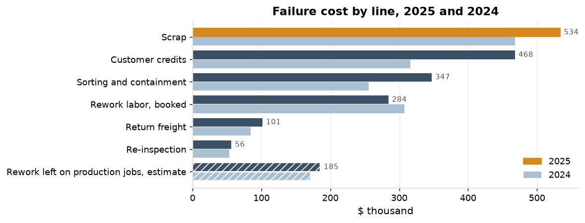
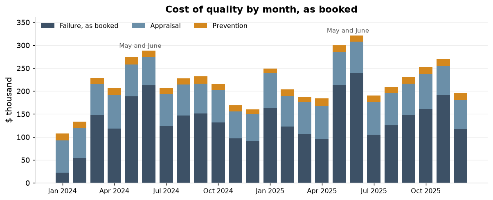

Cost of quality in 2025 is $2,795,965 as booked, 7.3% of revenue of $38,317,892. With the rework left on production jobs estimated from hours over standard it is $2,981,207, 7.8%. In 2024 the figures were 6.7% as booked and 7.1% with the estimate. Failure is 64.1% of the booked total, appraisal 29.8% and prevention 6.1%.
| 2025 | 2024 | 24 months | |
|---|---|---|---|
| Revenue (quantity shipped at unit price) | $38,317,892 | $36,767,984 | $75,085,877 |
| Scrap report (scrap transactions) | $533,788 | $468,324 | $1,002,112 |
| Failure, as booked | $1,790,858 | $1,485,321 | $3,276,179 |
| Appraisal | $834,208 | $797,939 | $1,632,147 |
| Prevention | $170,900 | $168,083 | $338,983 |
| Total, as booked | $2,795,965 | $2,451,343 | $5,247,309 |
| Total over revenue, as booked | 7.30% | 6.67% | 6.99% |
| Shares of the booked total: failure; appraisal; prevention | 64.1%; 29.8%; 6.1% | 60.6%; 32.6%; 6.9% | 62.4%; 31.1%; 6.5% |
| Failure : appraisal : prevention, as booked | 10.5 : 4.9 : 1 | 8.8 : 4.7 : 1 | 9.7 : 4.8 : 1 |
| Rework left on production jobs, estimate | $185,242 | $171,497 | $356,739 |
| Failure, with the estimate | $1,976,099 | $1,656,819 | $3,632,918 |
| Total, with the estimate | $2,981,207 | $2,622,840 | $5,604,047 |
| Total over revenue, with the estimate | 7.78% | 7.13% | 7.46% |
| Shares with the estimate: failure; appraisal; prevention | 66.3%; 28.0%; 5.7% | 63.2%; 30.4%; 6.4% | 64.8%; 29.1%; 6.0% |
| Failure : appraisal : prevention, with the estimate | 11.6 : 4.9 : 1 | 9.9 : 4.7 : 1 | 10.7 : 4.8 : 1 |
Every failure line of 2025 traces to its source record with no difference: $1,790,858 of $1,790,858. Of appraisal, $71,010 of $834,208 traces (CMM time to the CMM reports, laboratory calibration to the calibration events); inspection labor and the technician's calibration time are booked from timesheets that are not in the exports. No prevention line traces: training, SPC software and supplier audit travel are booked from invoices. In all, $1,861,868 of $2,795,965 as booked is traced, 66.6%. The estimate of rework left on production jobs: the 32 NCRs of 2025 with a rework disposition and no hours on the rework code had 3,859 hours over standard on their production lots, valued at the machinist rate.
| Line | Category | Cost lines | Amount | Source | Source records | Source amount | Difference |
|---|---|---|---|---|---|---|---|
| Scrap | failure | 370 | $533,787.88 | scrap transactions | 2,127 | $533,787.88 | $0.00 |
| Rework labor | failure | 62 | $284,299.20 | NCR rework hours at the machinist rate | 62 | $284,299.20 | $0.00 |
| Re-inspection | failure | 221 | $56,420.30 | NCR re-inspection hours at the inspector rate | 221 | $56,420.30 | $0.00 |
| Sorting and containment | failure | 113 | $346,996.77 | NCR sorting hours; complaint containment and sorting hours | 113 | $346,996.77 | $0.00 |
| Customer credit | failure | 40 | $467,871.17 | complaint credits | 40 | $467,871.17 | $0.00 |
| Return freight | failure | 40 | $101,482.28 | complaint return freight | 40 | $101,482.28 | $0.00 |
| CMM time | appraisal | 36 | $53,510.40 | CMM reports (hours per report and rate per hour as booked) | 11,148 | $53,510.40 | $0.00 |
| Calibration, laboratory | appraisal | 38 | $17,500.00 | laboratory calibration events (count; the record carries no cost) | 38 | $17,500.00 | $0.00 |
| Calibration, technician time | appraisal | 12 | $87,036.72 | timesheets | |||
| Inspection labor | appraisal | 48 | $676,160.83 | timesheets | |||
| Training | prevention | 24 | $85,943.25 | invoices | |||
| SPC software | prevention | 12 | $42,000.00 | invoices | |||
| Supplier audit travel | prevention | 10 | $42,956.67 | invoices |
Accounting books rework from the rework labor code: $284,299 on 62 NCRs in 2025. 32 of the 95 rework NCRs carry no hours on that code; the estimate for them is $185,242, which raises rework from $284,299 to $469,541. In 2024, 39 of 110 carried none and the estimate is $171,497.
| Year | Rework NCRs | With hours on the rework code | Hours booked | Amount booked | Without hours on the code | Hours over standard on their lots | Estimate at the machinist rate |
|---|---|---|---|---|---|---|---|
| 2025 | 95 | 62 | 5,923 | $284,299 | 32 | 3,859 | $185,242 |
| 2024 | 110 | 71 | 6,691 | $307,791 | 39 | 3,728 | $171,497 |
The scrap report understates failure cost: failure cost in 2025 is 3.35 times the scrap report as booked and 3.70 times with the estimate (3.17 and 3.54 in 2024). The report shows $533,788; customer credits, sorting and containment, rework labor, return freight and re-inspection add $1,257,070 as booked.

Failure cost as booked averages $149,238 a month in 2025 against $123,777 in 2024; appraisal and prevention are level. May and June are the highest pair of months in both years: $453,065 in 2025 and $401,836 in 2024. The peaks are in customer credits ($189,422 and $112,427) and in sorting and containment ($94,693 and $89,592), not in scrap ($58,824 and $93,288); F-14 scrap in May and June 2025 was $1,050.

The findings of S2, S3 and S4 account for $127,652 of $1,976,099 of failure cost in 2025 (with the estimate), 6.5%. The remaining failure cost sits in lines the studies did not address: customer credits outside S-017 ($394,794), scrap outside F-14 ($496,551) and sorting and containment outside the two ($339,596).
The milled length C-11909-01 (S2): $4,469 in 2025 from NCRs citing the length, which understates it, since 1 of its 2 rework NCRs carries no booked hours and the other NCR lines on part P-11909-A ($8,533 in 2025, citing C-11909-03 or no characteristic) are not added. F-14 scrap (S3): $37,237 in 2025; $4,196 a month on the 76 lots before the K20 insert and $766 a month on the 36 lots since. S-017 escapes (S4): 3 complaints in 2025 with $73,077 in credits, $7,401 in containment and $5,468 in return freight.
| Failure line | 2025 | Study finding on the line | 2025 under the findings | 2025 remaining | 2024 | 2024 under the findings |
|---|---|---|---|---|---|---|
| Scrap | $533,788 | F-14 scrap; the length | $37,237 | $496,551 | $468,324 | $39,117 |
| Customer credits | $467,871 | S-017 escapes | $73,077 | $394,794 | $316,048 | $44,402 |
| Sorting and containment | $346,997 | S-017 escapes; the length | $7,401 | $339,596 | $255,733 | $12,285 |
| Rework labor, booked | $284,299 | the length | $3,850 | $280,450 | $307,791 | $2,332 |
| Return freight | $101,482 | S-017 escapes | $5,468 | $96,014 | $84,441 | $18,593 |
| Re-inspection | $56,420 | the length | $619 | $55,801 | $52,984 | $312 |
| Rework left on production jobs, estimate | $185,242 | $0 | $185,242 | $171,497 | $0 | |
| Failure, with the estimate | $1,976,099 | $127,652 | $1,848,447 | $1,656,819 | $117,040 |
Receiving inspection under the Z1.4 switching rules (S4) is a cost avoided in appraisal, not a failure cost: at 1.37 minutes per sampled piece, 2,322 hours and $97,530 over the 24 months.
| Receiving inspection, 24 months | Sample pieces | Hours | Cost |
|---|---|---|---|
| Z1.4 table on every lot | 347,944 | 7,969 | $334,691 |
| Z1.4 with the switching rules applied | 246,553 | 5,647 | $237,162 |
| Difference | 101,391 | 2,322 | $97,530 |
Prevention is the smallest category: $170,900 in 2025, 6.1% of the booked total and 5.7% with the estimate, down from 6.9% and 6.4% in 2024. Failure to appraisal to prevention is 10.5 : 4.9 : 1 as booked and 11.6 : 4.9 : 1 with the estimate (8.8 : 4.7 : 1 and 9.9 : 4.7 : 1 in 2024).
Cost lines: 2,037 lines of the accounting ledger over the 24 months, grouped as failure, appraisal and prevention; re-inspection is the inspection labor booked against NCRs and is counted as failure. Reconciliation: each line against the record it derives from, by count and amount; scrap against the scrap transactions, rework, re-inspection and sorting against NCR hours at the labor rate of the year, credits, containment and freight against complaints, CMM time against the count of CMM reports, laboratory calibration against the count of laboratory calibration events. Estimate: hours over standard on the production lots of rework NCRs with no hours on the rework code, at the machinist rate; it is an estimate and is shown apart from the booked figures everywhere. Revenue: quantity shipped at unit price by ship date. Scrap report: the sum of scrap transactions. Monthly series: 24 full months, January 2024 to December 2025, as booked. Attribution: cost lines whose NCR cites the length; scrap transactions on F-14 lots; complaints for plating defects on accepted S-017 lots. Amounts are measured costs for the period; none is annualized.
| Line | Category | Cost lines | Amount | Source | Source records | Source amount | Difference |
|---|---|---|---|---|---|---|---|
| Scrap | failure | 385 | $468,323.98 | scrap transactions | 2,176 | $468,323.98 | $0.00 |
| Rework labor | failure | 71 | $307,790.60 | NCR rework hours at the machinist rate | 71 | $307,790.60 | $0.00 |
| Re-inspection | failure | 212 | $52,984.30 | NCR re-inspection hours at the inspector rate | 212 | $52,984.30 | $0.00 |
| Sorting and containment | failure | 90 | $255,732.81 | NCR sorting hours; complaint containment and sorting hours | 90 | $255,732.81 | $0.00 |
| Customer credit | failure | 35 | $316,048.29 | complaint credits | 35 | $316,048.29 | $0.00 |
| Return freight | failure | 35 | $84,441.48 | complaint return freight | 35 | $84,441.48 | $0.00 |
| CMM time | appraisal | 36 | $53,918.40 | CMM reports (hours per report and rate per hour as booked) | 11,233 | $53,918.40 | $0.00 |
| Calibration, laboratory | appraisal | 40 | $13,840.00 | laboratory calibration events (count; the record carries no cost) | 40 | $13,840.00 | $0.00 |
| Calibration, technician time | appraisal | 12 | $83,056.80 | timesheets | |||
| Inspection labor | appraisal | 48 | $647,123.45 | timesheets | |||
| Training | prevention | 24 | $82,999.93 | invoices | |||
| SPC software | prevention | 12 | $42,000.00 | invoices | |||
| Supplier audit travel | prevention | 11 | $43,083.11 | invoices |
| Line | Category | 2025 lines | 2025 amount | 2025 hours | 2024 lines | 2024 amount | 2024 hours |
|---|---|---|---|---|---|---|---|
| CMM time | appraisal | 36 | $53,510 | 4,459 | 36 | $53,918 | 4,493 |
| Calibration | appraisal | 50 | $104,537 | 1,892 | 52 | $96,897 | 1,888 |
| Inspection labor | appraisal | 48 | $676,161 | 15,724 | 48 | $647,123 | 15,783 |
| Customer credit | failure | 40 | $467,871 | 35 | $316,048 | ||
| Re-inspection | failure | 221 | $56,420 | 1,312 | 212 | $52,984 | 1,292 |
| Return freight | failure | 40 | $101,482 | 35 | $84,441 | ||
| Rework labor | failure | 62 | $284,299 | 5,923 | 71 | $307,791 | 6,691 |
| Scrap | failure | 370 | $533,788 | 385 | $468,324 | ||
| Sorting and containment | failure | 113 | $346,997 | 5,292 | 90 | $255,733 | 3,574 |
| SPC software | prevention | 12 | $42,000 | 12 | $42,000 | ||
| Supplier audit travel | prevention | 10 | $42,957 | 11 | $43,083 | ||
| Training | prevention | 24 | $85,943 | 24 | $83,000 |
| Month | Failure, as booked | Appraisal | Prevention | Total, as booked |
|---|---|---|---|---|
| January 2024 | $22,369 | $69,987 | $15,045 | $107,401 |
| February 2024 | $53,964 | $65,646 | $14,073 | $133,683 |
| March 2024 | $147,468 | $68,131 | $13,495 | $229,094 |
| April 2024 | $118,233 | $73,313 | $15,161 | $206,707 |
| May 2024 | $189,109 | $68,702 | $16,098 | $273,910 |
| June 2024 | $212,727 | $60,897 | $14,960 | $288,584 |
| July 2024 | $123,720 | $69,596 | $13,273 | $206,588 |
| August 2024 | $147,005 | $67,172 | $13,998 | $228,175 |
| September 2024 | $151,048 | $65,015 | $16,565 | $232,629 |
| October 2024 | $131,852 | $70,658 | $13,109 | $215,619 |
| November 2024 | $97,359 | $58,767 | $12,902 | $169,027 |
| December 2024 | $90,468 | $60,055 | $9,403 | $159,926 |
| January 2025 | $163,144 | $75,800 | $10,554 | $249,498 |
| February 2025 | $122,792 | $66,463 | $14,942 | $204,197 |
| March 2025 | $107,162 | $68,993 | $11,595 | $187,750 |
| April 2025 | $96,399 | $72,015 | $15,811 | $184,225 |
| May 2025 | $213,534 | $71,158 | $15,448 | $300,140 |
| June 2025 | $239,531 | $68,313 | $13,781 | $321,624 |
| July 2025 | $105,111 | $70,864 | $14,623 | $190,598 |
| August 2025 | $125,603 | $69,956 | $13,519 | $209,078 |
| September 2025 | $147,585 | $68,804 | $14,780 | $231,170 |
| October 2025 | $160,822 | $76,457 | $15,392 | $252,671 |
| November 2025 | $191,511 | $62,670 | $15,324 | $269,506 |
| December 2025 | $117,663 | $62,716 | $15,131 | $195,510 |
| NCR cites | Line | 2025 lines | 2025 amount | 2024 lines | 2024 amount |
|---|---|---|---|---|---|
| Other on the part | Re-inspection | 2 | $744 | 2 | $795 |
| Other on the part | Rework labor, booked | 1 | $3,068 | ||
| Other on the part | Scrap | 1 | $1,567 | 1 | $2,325 |
| Other on the part | Sorting and containment | 2 | $6,222 | 1 | $1,894 |
| The length | Re-inspection | 3 | $619 | 2 | $312 |
| The length | Rework labor, booked | 1 | $3,850 | 1 | $2,332 |
| The length | Scrap | 1 | $1,753 |
| Year | Complaints | Credits | Containment | Return freight | Total |
|---|---|---|---|---|---|
| 2025 | 3 | $73,077 | $7,401 | $5,468 | $85,946 |
| 2024 | 6 | $44,402 | $12,285 | $18,593 | $75,280 |